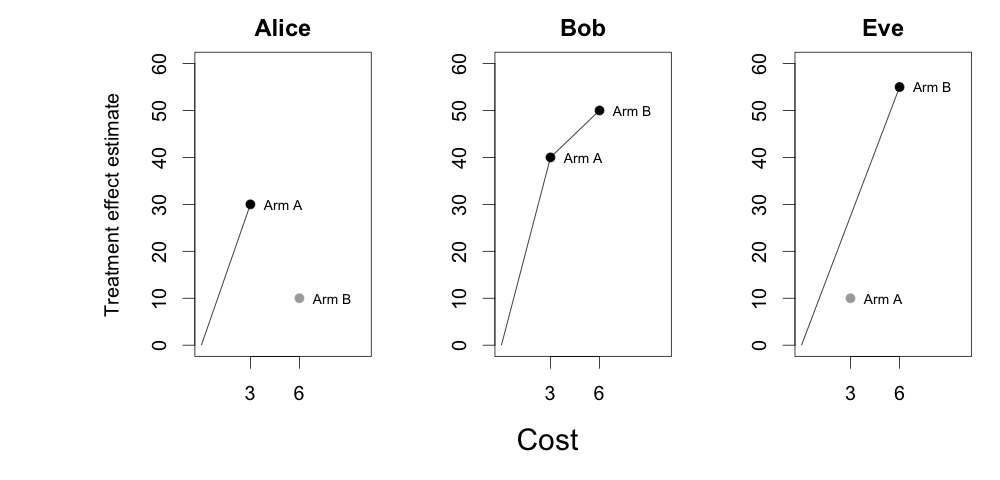
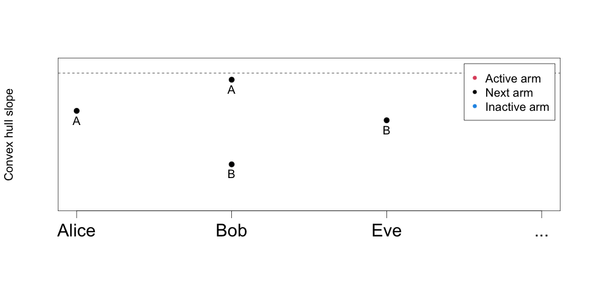

MAQ 算法参考
本文是 maq 官方算法参考（REFERENCE.md）的中文译本，给出多臂处理规则 Qini 曲线底层算法的高层概览。完整细节见论文 arXiv:2306.11979。
从单臂到多臂
构造数据驱动处理规则的一种流行做法，是用条件平均处理效应（CATE）的估计值来决定「给谁治疗」。下表给出三个假想个体——Alice、Bob、Eve——在两种干预（处理臂 A 与处理臂 B）下的 CATE 估计示例：
| 个体 | 处理臂 A 的 CATE 估计 | 处理臂 B 的 CATE 估计 |
|---|---|---|
| Alice | 30 | 10 |
| Bob | 40 | 50 |
| Eve | 10 | 55 |
如果我们假设两个处理臂成本相同、或者分配治疗时成本完全无关，那么用上述估计来评估并可视化处理规则在概念上很直接：按 CATE 估计从高到低对个体排序，然后随着「被治疗的比例（或平均花费）」的增加计算增益（gain / uplift）——这就是单臂情形的 Qini 曲线。
带成本的分配问题
在许多实际应用中，不同处理臂的成本不同。例如处理臂 A 可能是低成本的在线学生辅导项目，而处理臂 B 是成本更高的有人指导项目。我们的 CATE 估计可以度量「参加培训项目相对于不接受任何处理（对照臂）能让考试分数提高多少」。假设分配 A 的成本是 3（按某种选定的货币单位），分配 B 的成本是 6。
那么当我们愿意支付的平均金额变化时，如何分析一个「最优地」同时使用两种处理臂的处理规则？此时构造 Qini 曲线不再直接：在每个预算水平上，我们都必须在「给某个个体分配初始干预」与「把另一个个体升级为更贵但更有效的干预」之间做选择。这个受约束的选择问题是一个（线性）多选背包问题（multiple-choice knapsack problem）：在每个预算水平（背包容量）上，都要最优地决定给哪个个体、分配哪个臂，使平均成本不超过该预算。
凸包与阈值
用另一种方式表示上面的表格会很有帮助。在下图中，我们对所有个体画出「估计的处理效应」（纵轴）与「分配该臂的成本」（横轴）：

对于给定的背包容量，我们实际会从中选择的臂，只落在上图的左上凸包（upper-left convex hull）上（Kellerer 等人（2004）在第 11 章有一个很好的综述）。对 Alice 来说，处理臂 B 不在凸包上——因为它的成本更高、估计收益反而更低。对 Bob 来说，两个处理臂都在凸包上。可以证明：在给定背包容量下，被装入背包的臂与个体，恰是那些凸包斜率高于某个阈值的选项。
利用这一性质可以构造一个算法，在背包容量递增的过程中给出最优选择（给哪个个体分配哪个臂）。与单臂情形一样，它依然依赖排序——只不过现在是按递减的「增量凸包斜率」排序。
解路径动画
下面的动画展示了两种有成本干预 A 和 B 的处理效应估计，如何在不同的预算约束下产生多臂处理规则。纵轴是个体凸包上臂与臂之间的斜率（对应上图），横轴是个体。随着水平阈值（虚线）逐步降低，跟踪「是新给一个个体的分配一个臂，还是把已有个体升级为更贵的臂」，即可找到递增预算水平下解中处于活跃状态的个体与臂：

这就是 maq 包所计算的多臂策略（并通过例如逆概率加权 IPW 或增广逆概率加权 AIPW 来估计其价值）。举例来说，在平均支出等于 5 时，估计出的多臂策略是：给 Alice 分配臂 A、给 Bob 分配臂 B、给 Eve 分配臂 B，总平均成本为 (3 + 6 + 6) / 3 = 5。
参考文献
- Hans Kellerer, Ulrich Pferschy, and David Pisinger. Knapsack Problems. Springer, 2004.
- Erik Sverdrup, Han Wu, Susan Athey, and Stefan Wager. Qini Curves for Multi-Armed Treatment Rules. Journal of Computational and Graphical Statistics. 34(3), 2025. arXiv:2306.11979